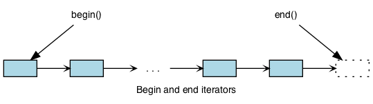
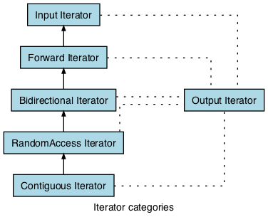

8.1. Background¶
How can we visit each element in a container and remain ignorant of the underlying container implementation details? For example, given:
array<string, 3> names = {{"Alice"}, {"Bob"}, {"Clara"}};;
std::map<std::string, int>
ages = {{"Alice", 27}, {"Bob", 3}, {"Clara", 1}};
What options do we have for operating on each element in names and ages?
A traditional for loop or while loop works for names:
for (int i=0; i < names.size(); ++i) {
cout << names[i] << '\n';
}
int i = 0;
while(i < names.size()) {
cout << names[i++] << '\n';
}
Traditional loops using an int index do not work with containers
that do not overload operator[].
We solve this problem by avoiding explicit indexing altogether.
The range for loop
provides a more readable equivalent to the traditional for loop:
for (string s: names) {
cout << s << '\n';
}
// better: avoids copying
for (const auto& s: names) {
cout << s << '\n';
}
The same syntax can be used for any STL container:
std::map<std::string, int>
ages = {{"Alice", 27}, {"Bob", 3}, {"Clara", 1}};
for (const auto& a: ages) {
cout << a.first << ' ' << a.second << '\n';
}
When you need to loop over each element in a collection, the range for loop has completely abstracted away the idea of moving from one element to the next.
We say these containers are iterable.
8.1.1. Iterator pattern¶
A design pattern is a general repeatable solution to a commonly occurring problem in software design. A primary goal of design patterns is to quickly transfer the knowledge gained by expert designers to newer programmers. Another goal is to allow for efficient communication between programmers. Design patterns contribute to a shared vocabulary between programmers.
Because design patterns represent general ideas about solving classes of problems, they are language independent. In the case of iterators, the idea has solutions in most modern languages, including C++.
Each STL container class provides an iterator class that clients can use to retrieve the correct element from the container.
The element defined by begin() is part of the sequence.
The element defined by end() is not part of the sequence.
In C++, the end iterator is always one past the end of the sequence.
Forgetting this is a common source of error.
8.1.2. Basic iterator operations¶
Iterators in C++ by design feel as if you are using pointers. Most iterators support the same operations as pointers.
| Operation | Result |
|---|---|
p == q |
true if and only if p and q
point to the same element or both point to end |
p != q |
negation of above |
*p |
refers to the element pointed to by p |
*p = val |
writes val to the element pointed to by p |
val = *p |
reads from the element pointed to by p and
writes to val |
++p |
increment the iterator, making it point to the next
element in the container or to end |
8.1.2.1. Iterator categories¶
Different containers need different capabilities from their iterators.
Instead of being defined by specific types, each category of iterator is defined by the operations that can be performed on it. This definition means that any type that supports the necessary operations can be used as an iterator — for example, a pointer supports all of the operations required by Random Access Iterator, so a pointer can be used anywhere a Random Access Iterator is expected.
All of the iterator categories (except Output Iterator) can be organized into a hierarchy, where more powerful iterator categories (e.g. Random Access Iterator) support the operations of less powerful categories (e.g. Input Iterator). If an iterator falls into one of these categories and also satisfies the requirements of Output Iterator, then it is called a mutable iterator and supports both input and output. Non-mutable iterators are called constant iterators.
- Input Iterator
- Read elements and increments using
operator++, without multiple passes. Classes like std::instream provide this iterator. - Forward Iterator
- InputIterator, plus increment using
operator++, with multiple passes. The std::forward_list container provides this iterator. - Bidirectional Iterator
- ForwardIterator, plus decrement using
operator--Containers like std::list, std::map, and std::set provide this iterator. - Random Access Iterator
- BidirectionalIterator, plus access using
operator[]Before C++17, containers like std::vector, std::array, and std::string provided this iterator. It is still used for unordered collections like std::unordered_map and std::unordered_set - Contiguous Iterator
- RandomAccessIterator, plus the container make a continuous storage guarantee. This category was added in C++17. Before C++17 iterators of containers like std::vector and std::array were often treated as a separate category. This category simply formalizes what was happening in practice.
- Output Iterator
- More of a ‘sub category of all of the others. If the iterator allows writing to the element, it is also an OutputIterator
8.1.3. Using iterators¶
Assigning an iterator explicitly to a variable works much like any other type:
vector<int> nums = {1, 2, 3, 4, 5};
vector<int>::iterator it = nums.begin();
The variable it now points to the beginning of the container nums
and can used much like a pointer:
vector<int> nums = {1, 2, 3, 4, 5};
vector<int>::iterator it = nums.begin();
cout << *it; // prints: 1
The iterator type always matches the value type of the enclosing container.
Just as with pointers, an iterator to a vector<int>
is a different type from an iterator to a vector<string>.
It is possible to declare an iterator and use it in a traditional for loop:
vector<int> nums = {1, 2, 3, 4, 5};
cout << "nums contains:";
for (vector<int>::iterator it = nums.begin();
it != nums.end(); ++it) {
std::cout << ' ' << *it;
}
Which produces:
nums contains: 1 2 3 4 5
A while loop can produce equivalent results:
vector<int> nums = {1, 2, 3, 4, 5};
cout << "nums contains:";
vector<int>::iterator it = nums.begin();
while (it != nums.end())
std::cout << ' ' << *it;
++it;
}
We can shorten either example with auto,
since the compiler can easily determine what type is returned from begin():
for (auto it = nums.begin(); it != nums.end(); ++it) {
std::cout << ' ' << *it;
}
Example code like one of the two previous examples is commonly found on the web, even when the point of the example has nothing to do with iterators. When you don’t need an iterator, don’t use it:
for (const auto& n: nums) {
std::cout << ' ' << n;
}
A common source of error for new programmers is confusion about the types used in these two loops:
begin()- Always returns an iterator that must be dereferenced in order to access the element value.
- The range for declaration
- Always is assigned a value from the container. Unless the container is a container of pointers, no dereferencing is needed.
8.1.3.1. Limits of Range-based for loops¶
The Range-for loop, while convenient, has limitations.
Any situation in which you do not need or want to visit every element requires a traditional loop:
for (int i=n; i>0; i/=2) {
// do something with i . . .
}
Similarly, if you need to iterate through multiple containers in a single loop, possibly at different rates, then you need a traditional for loop:
for (int i=n, j=0; i>0; i/=2, j++) {
// do something with i and j . . .
}
If you need to traverse a container and remove items,
then you need an explicit iterator so that you can call the container erase method:
vector<int> nums = {0, 1, 2, 3, 4, 5, 6, 7, 8, 9};
// Erase all even numbers
for (auto it = nums.begin(); it != nums.end(); ) {
if (*it % 2 == 0) {
it = nums.erase(it);
} else {
++it;
}
}
Things to note about this example:
itis not incremented in the for loop iteration expression- If an element is erased, the current iterator is invalidated.
Any further use would be an error in a
vector. The vector::erase function returns the iterator to the next element in the container.
8.1.4. Container functions that require iterators¶
Most container functions that use position information do not use an index like operator[].
Most of them express position using iterators.
- insert
- Inserts elements at the specified location in the container.
- erase
- Removes specified elements from the container.
erasemay remove a single element or a contiguous range of elements.
More to Explore
- Iterator Library at cppreference.com